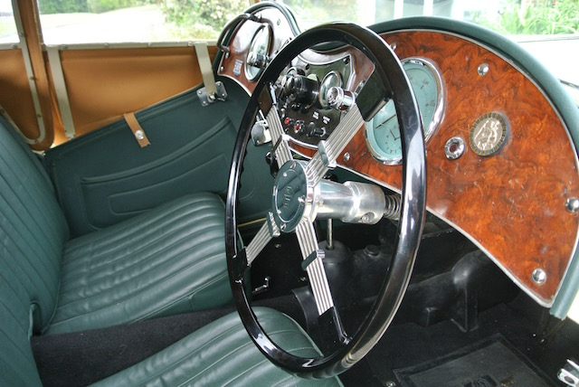
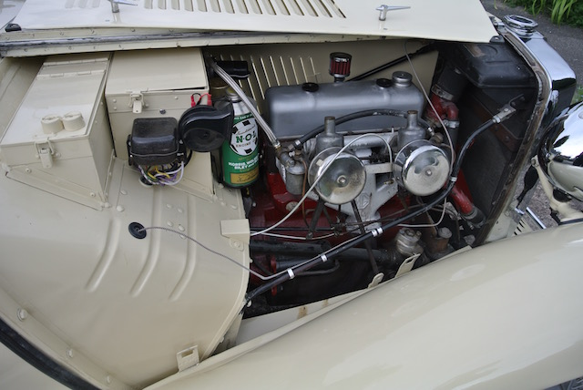
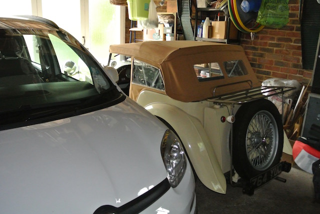

MG TC4985
Build date: 10th March 1948
Chassis number: TC4985
Original engine number: XPAG 5506
Present engine number: XPAG 7592
Registration: 764 YUD
Purchase date: 20th June 2015
Using TC4985:
Work on TC4985:
- Service Notes
- Radiator Mounting Bracket & Engine Mounts
- Handbrake Cables
- Stub Axles
- Leaking Fuel Sender Unit
- Odometer Trip Reset
- Spring Bushes
- Flashing Indicators
- Distributor Bushes
- Windscreen Wiper Motor
- Rear Axle Problem
- Relining Brake Shoes
- Steering Drop Arm
- Cleaning Prop Shaft and Tunnel
- Engine Head Investigation
- Steering Box Oil Seal
- Horn Refurbishment
- Carburettors
- Kingpin Replacement
- Odds & Ends
In the summer of 1970, after my first year at university, I worked as an 'assistant caretaker' for the London Borough of Barnet so as to earn enough money to buy a car. At that time I was interested in several MG TCs that were advertised for around £100, but my Dad didn't think that a TC would be very practical to get me and my stuff from Potters Bar to Lancaster and back. He was probably right, so I bought a ten year old Ford Prefect 107E!
Fast forward 48 years and I've been retired for two years. I sold my MGF when I retired (because we only need one car), but have missed it ever since. We've owned 'old' cars, at various times, in the form of Minis, a Mk1 Triumph Spitfire and a Morris 1000 Traveller, but my love of the TC has never diminished. Over recent years I had looked at what was on the market in the way of TCs, particularly those built in 1948. Nowadays, one in reasonable condition is selling for something between £25,000 and £35,000!
So after a lot of attempts to persuade Angela that buying a TC was a good idea (which never really worked) I looked at three cars before finding TC4985. Some details of those cars can be found here.
The car that I bought was advertised on the Octagon Club web site. I had seen it earlier, but it was near Clacton in Essex (125 miles away) and so I initially ignored it. It was advertised as:
MG TC 1948. Chassis no. TC 4985. Finished in sequoia cream with new shires green leather upholstery. New tan double duck hood and side screens. Correct headlamps and fog light, new wiring loom fitted. Many other items replaced in order to make this a very attractive and much admired TC. £24,995.
He had owned it for just over three years and bought it from a dealer in Kent. The car had been brought back from the US, he thinks, by someone in Seaford, who did a lot of mechanical work on it, but who was then too old and large around the waiste to drive it (it is tight behind the wheel). Chris (the current owner) found that a lot of parts were not original TC but had been replaced with TD parts, these being more easily available in the US.
Chris said that the car has a TD engine, although still an XPAG. However, by looking at the engine number plate and the 'T database' I subsequently found that the engine is from a TC that was built during October 1948. The car also has abnormal air filters. Chris had removed under seal and painted the chassis with dark green Hammerite. He had it resprayed from white to the original sequoia cream, replaced headlights, fog light and rev counter. He also had a new hood made.
I noticed that the footplate had not been painted, that the normal TC air filter had been replaced with two separate units and that the front suspension was only a little way off the bump stops (¼ on one side and ¾ on the other). However, it was just old enough to have a walnut veneered dashboard. Chris had fitted a new wiring loom and had it converted to negative earth. He had also fitted flashing indicators in the side lights at the front and on lights fixed to the luggage rack at the rear. I had already established that 1948 was the first year that sequoia cream was available and that the T-series register had this car down as being cream/red, in other words, originally with red upholstery.
 Chris had lots of receipts for parts obtained in the UK, but no documentation of what had been done in the US.
Chris had lots of receipts for parts obtained in the UK, but no documentation of what had been done in the US.
After going for a drive (Chris drove, since I was not insured) I offered the asking price, but he reduced it by the cost of a new set of front springs, which we looked up on the NTG web site, to a resultant price of £24,650. At first I was thinking of trying to drive it home, but the journey, even in a modern car, was not pleasant, so I booked transport for Saturday 20th June 2015 with a man in Sompting, who had three TR6s and seemed to do classic car transport as a hobby. Meanwhile I arranged insurance and, having left a deposit, transferred the rest of the money.
When we got home I reversed the car into the garage, alongside the Panda. There is just enough room for them to lie side-by-side and still be able to open the driver's door. However, I need to move my shelving unit along so that the gap is where the MG's door actually opens. Then, on the Sunday, I drove it to the BP garage in Beeding and put 10 litres of unleaded petrol in the tank, together with 50 cl of Millers VSPe additive, as used by the previous owner. I found that the steering is extreemly heavy. When the front wheels are jacked up off the ground, however, everything moves easily and smoothly, with no evidence of wear. I also took Angela for a drive to Dad's (about six miles), which she did not enjoy! When we got home I discovered that the brakes seemed to be binding. I later established that they were binding on all wheels! This could be a known problem with the master cylinder when the rubber parts are old. However, the master cylinder is bolted to the chassis under the floor, with a heat shield to protect it from the exhaust. Even when the car is up on axle stands it is very difficult to get to the master cylinder, so I booked it into Cripps Motors in Storrington to get them to look at it. I also asked them to look at a grease point on the lower near side king pin, into which I can't get grease, and to check the steering/front suspension.
© David James 2020 Last updated: 15th October 2021